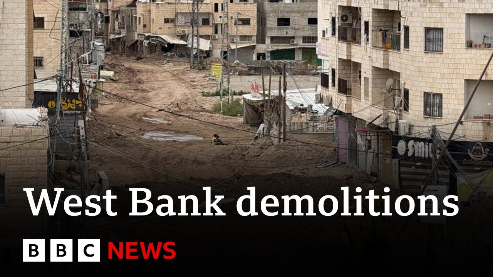

来B站一起耍【Global每日英语简报】
【以色列扩大对约旦河西岸难民营房屋的拆除行动 | BBC新闻】
Summary: The mayor of Janine reports the West Bank's largest Palestinian refugee camp is now uninhabitable, with thousands displaced and hundreds of homes demolished since Israel's January military campaign, a situation the UN calls unprecedented. Israel claims it targets "terror strongholds," while the BBC documents one displaced man's story amid widespread destruction and restricted access.
摘要： 杰宁市市长称，约旦河西岸最大的巴勒斯坦难民营现已无法居住。自以色列1月发动军事行动以来，数千人流离失所，数百房屋被毁，联合国称局势"前所未有"。以色列称其目标是"恐怖分子据点"，BBC记录了一名流离失所者的故事，当地满目疮痍且通行受限。

⏱️ Estimated Reading Time: 5 min
Now, one of the largest Palestinian refugee camps in the occupied West Bank has become uninhabitable, says the mayor of Janine.
杰宁市市长表示，目前被占领的约旦河西岸最大的巴勒斯坦难民营之一已无法居住。
Thousands of Palestinians have been displaced and hundreds of homes have been demolished since Israel launched a military campaign in January.
自以色列1月发动军事行动以来，数千名巴勒斯坦人流离失所，数百所房屋被拆除。
That's according to the UN, which says that the situation is unprecedented.
联合国称这一局势"前所未有"。
Israel says it wants to dismantle what it calls terror strongholds in the camps.
以色列表示要拆除其所谓的难民营中的"恐怖分子据点"。
The BBC has followed the story of one man who was forced out of the camp and whose home was identified for demolition by the IDF.
BBC追踪报道了一名被驱逐出难民营、其房屋被以色列国防军标记拆除的男子。
Emir Nada has more.
埃米尔·纳达为您详细报道。
It's been 3 months since Jamal was forced out of his home.
贾马尔被赶出家园已有三个月。
He's one of thousands of Palestinians from Janine refugee camp in the West Bank who don't know when or if the Israeli military will let them return.
他是约旦河西岸杰宁难民营数千名不知以军何时或是否允许他们返回的巴勒斯坦人之一。
There there is my house.
那里就是我的房子。
The house is less than a kilometer away, but Juma has only been allowed one brief visit.
房子距离不到一公里，但朱马仅被允许短暂探望一次。
My house was standing when I last saw it.
我上次见到时房子还立着。
I went to bring my UN8 card.
我去拿联合国难民证。
Now he has no idea how much of his home remains.
如今他完全不知道家还剩下多少。
I can see so much destruction and damage in the camp.
我看到难民营里满目疮痍。
A lot of destruction and demolition.
到处都是破坏和拆除的痕迹。
In the West Bank, refugee camps home to Palestinians displaced from Israel have become the base of militias who say they're fighting Israeli occupation.
约旦河西岸收容逃离以色列的巴勒斯坦人的难民营，已成为宣称反抗以色列占领的民兵组织基地。
Israel calls them terrorists and in January stepped up its campaign against them, entering the camps and forcing out residents before beginning a wave of building demolitions.
以色列称其为恐怖分子，并于1月加强打击行动，进入难民营驱逐居民后开始大规模拆楼。
While filming, we see Palestinian municipal workers attempting to clear a route to a hospital.
拍摄期间，我们看到巴勒斯坦市政工人试图清理通往医院的道路。
They're detained, then denied entry to the blockaded camp.
他们被拘留，随后被禁止进入被封锁的难民营。
There are big challenges in terms of providing services to citizens.
在向民众提供服务方面存在巨大挑战。
As everyone knows, the infrastructure in Janine camp has been totally demolished.
众所周知，杰宁难民营的基础设施已被彻底摧毁。
Israel's goal is to try to make Janine camp totally unfit to live in.
以色列的目标是让杰宁难民营完全无法居住。
And I am telling you, it has now become completely unlivable.
我告诉你们，这里现在已完全不适合居住。
Israel says the demolitions are necessary for its counterterrorism operations, improving military movement through the camps, but doesn't confirm which buildings it's destroyed.
以色列称拆除对其反恐行动有必要，可改善军队在难民营的行动，但未确认具体拆除了哪些建筑。
In March, Israel issued a map of over 90 buildings it said it would demolish in Janine camp.
3月，以色列发布了杰宁难民营90多栋待拆除建筑的示意图。
Jumar appeared to be among them.
朱马尔的房子似乎在其中。
Using satellite imagery, we've identified that at least 33 of those buildings have been destroyed, including Jumar's.
通过卫星图像，我们确认其中至少33栋建筑已被毁，包括朱马尔的家。
The UN says it estimates that Israel has demolished 200 buildings housing 600 apartments in Janine camp alone.
联合国估计，仅杰宁难民营以色列就拆除了200栋建筑共600套住房。
Now living in temporary accommodation, Jumar is indignant about losing his home.
现暂居临时住所的朱马尔对失去家园感到愤怒。
Why did they demolish my house?
他们为什么拆我的房子？
I want to know.
我想知道。
I want the Israeli army to give me justification.
我要以色列军队给我理由。
I had no links to militants.
我与武装分子毫无关联。
I am a peaceful person.
我是个安分守己的人。
Jumar, like thousands of other Palestinians in the West Bank, now doesn't know where he will live next without compensation and with few of his life's belongings besides the family pet.
与西岸数千巴勒斯坦人一样，朱马尔如今不知将栖身何处——没有赔偿，除家养宠物外几乎失去所有财产。
I am only looking to live in peace and freedom.
我只求和平自由地生活。
That's it.
仅此而已。
I swear I am so sick of it all.
我发誓我受够了这一切。
We have had enough.
我们忍无可忍了。
Another BBC News.
BBC新闻持续关注。